[toc]
恶意代码检测的基本目的是给定可执行PE文件，判定其是否属于恶意代码，属于二分类问题，基线正确率为50%。
基本的实验方法包括基于特征提取+SVM/kNN、ResNet14
传统机器学习方法的基本思路是：首先利用领域或者专家知识提取PE文件中的特征，基于特征进行分类。 为了顺利的进行实验，模型的拟合不仅需要恶意代码特征样本，还需要良性代码文件作为反例同时 输入到模型中进行训练。本实验中的默认设定是从Windows中提取的可执行格式文件：
exe,dll, ocx, sys, com
同时为了与恶意文件的大小对齐，设定良性文件的大小范围为：
15~3000 KB
结果从Windows文件夹下提取到x个良性文件样本
提取特征的方法参考了 [Transfer Learning for Image-Based Malware Classification", Bhodia et.al(2019)](Transfer learning for image-based malware classification.pdf), 使用GitHub上的PeFile模块。 其主要提取的是PE文件的代码特征，例如头文件大小SizeOfHeads，代码大小SizeOfCode， SectionMeanEntropy模块平均熵等，总共54个特征作为分类时每个PE文件的特征向量。
通过观察，这些特征各个维度上的数据差距实质上较大。查看其中一个样本提取到的特征的值：
通过观察可以发现：
特征内部的数据的尺度相差极大：例如代码段大小等数据就可能达到$10^{4}$的数量级，但是对于 例如MajorLinkerVersion主链接器版本等特征，其数量级仅仅在个位数上
某些特征的对于分类的贡献十分微小：例如第一个特征Machine，通过查看前100个样本的该值与label：

可以发现该值大部分都是相同的332，同时少量不同值为34404的样本的标签并没有与其他值为332的标签有显著 不同，说明Machine特征对于分类的贡献十分微小。同时，Machine这类特征属于枚举类值，在值上样本间并不 会有较大的波动，因此该特征作为特征向量的一部分会造成数据中存在大量的冗余。
利用之前得到的数据可以直接输入到SVM，KNN等分类器中，其中k=1。利用PCA降维至2维得到 可视化结果。如果不对数据直接处理，得到的结果如下：


结果显示：
kNN的分类正确率高达99%，这说明利用专家知识和领域知识构建的特征工程能够很好地在样本上发挥作用，使得恶意样本 和良性样本分离开，使得同类样本近邻。
SVM的正确只有50%，由于本实验本身为二分类，因此该结果说明SVM根本不能直接从数据中学习到任何的知识。初步分析 这是因为各维度之间数值尺度差距过大导致的。
在利用PCA降维时，查看了各特征值所占的比例，结果发现降维至n=2时，有一个特征值的值所占比例超过了99.99%，而占比第二大的特征值比例仅为$3*10^{-8}$。这说明分类几乎都是基于一个维度上的值进行分类的，实质上其他维度几乎没有分类效果，完全是冗余数据
因此考虑在读取数据时，对各数据维度进行标准化：
def normalize_data(data):
mean = np.mean(data, axis=0)
std = np.std(data, axis=0)
normalize_func = lambda x: (x - mean) / std
data = np.apply_along_axis(normalize_func, axis=1, arr=data)
return np.nan_to_num(data)
将标准化以后的数据重新输入到原模型中，其他设定不变，得到的结果如下：

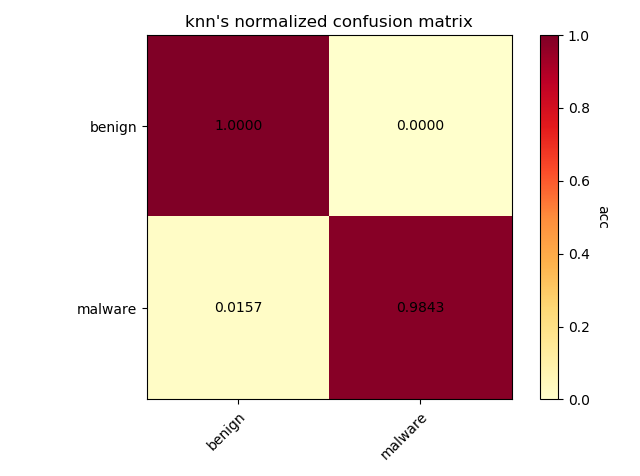


可以发现经过标准化以后降维的使得分布更加直观，kNN的正确率几乎没有变化，但是SVM的正确直线上升，仅比kNN小1个百分点。
需要注意的是，标准化是基于所有样本上进行的。因此，标准化所需的均值和标准差都是 基于训练集+测试集的数据进行的。然而在训练阶段使用测试阶段的数据违背了机器学习的基本 原则，因此在以后的传统机器学习实验中，均不对样本进行标准化
考虑对于Virus，Trojan,Worm等大类的一个极限0-shot情况：训练样本中不包含这些大类的 样本，但是测试样本中的恶意代码样本均来自这些大类中。这种设定的目的是检验模型能否在没有见 过某种恶意代码的情况下将其识别出来，称“大类缺省实验”。在实验中，分别选择backdoor，email， net-worm，trojan和virus作为缺省大类，分别使用不包含这些类的样本的其他类别的数据集训练kNN， SVM等。同时，遵循1.1.3中阐述的原则，没有对特征进行标准化。训练时，同样使用相同数量的良性样本 同时输入到模型中，良性样本来自Windows。从恶意样本中抽样时，大致依然按照每个文件200个样本的规律。
Backdoor：
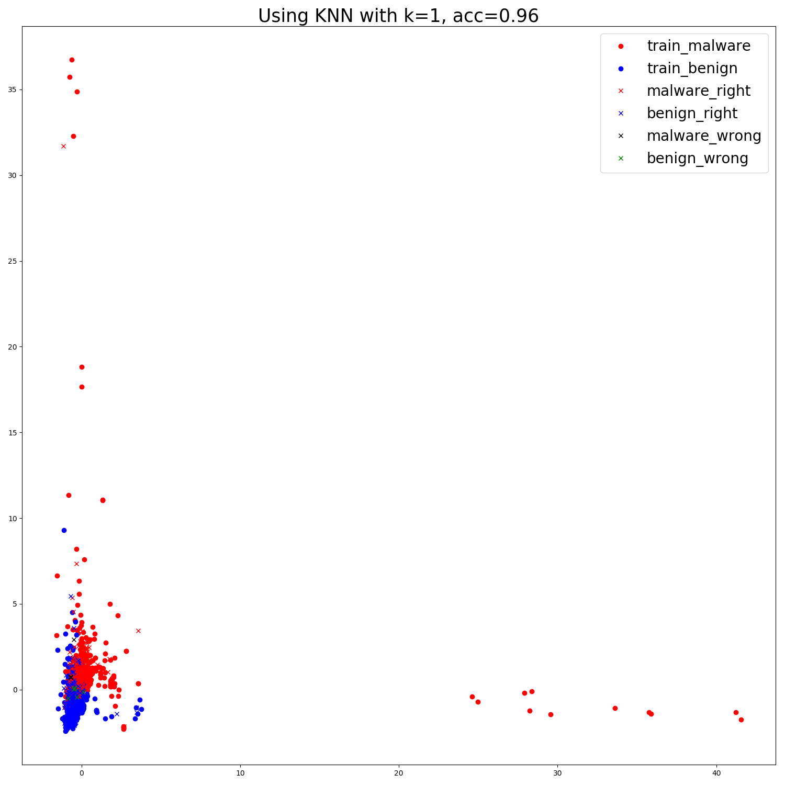
 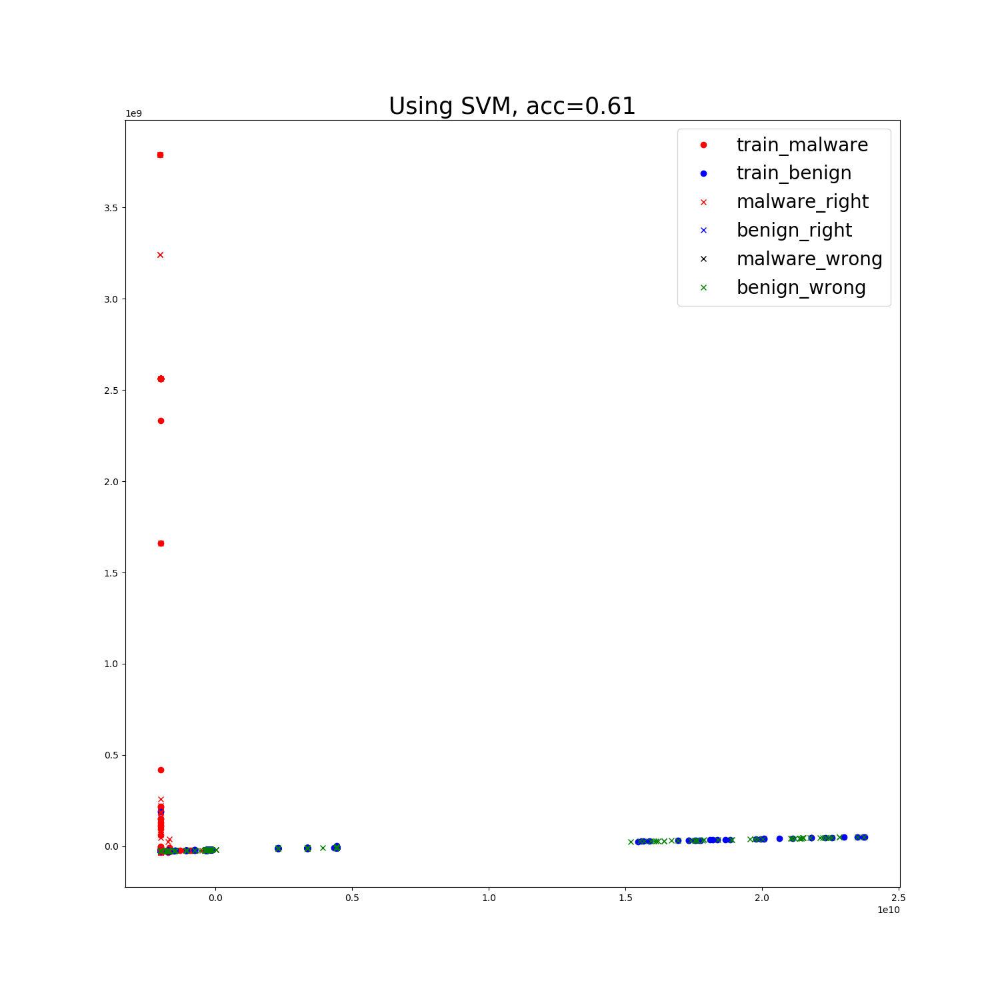
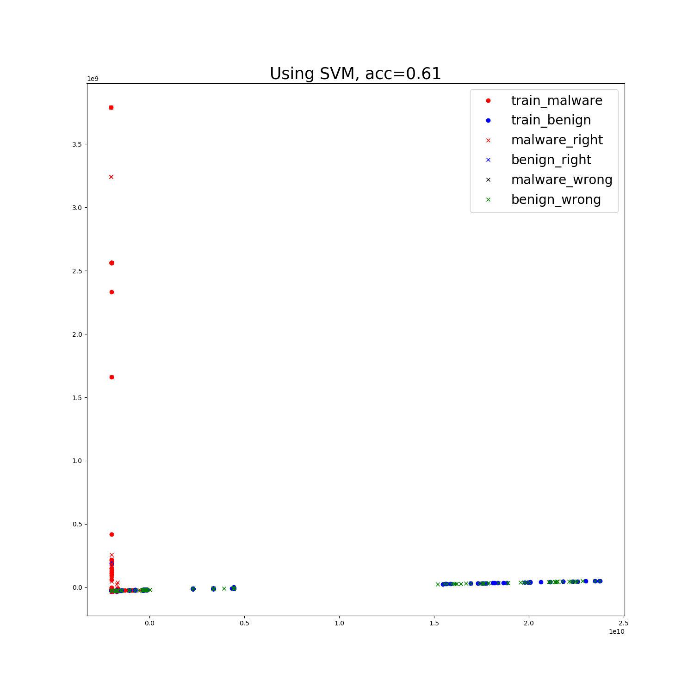

Email：


Net-Worm：

 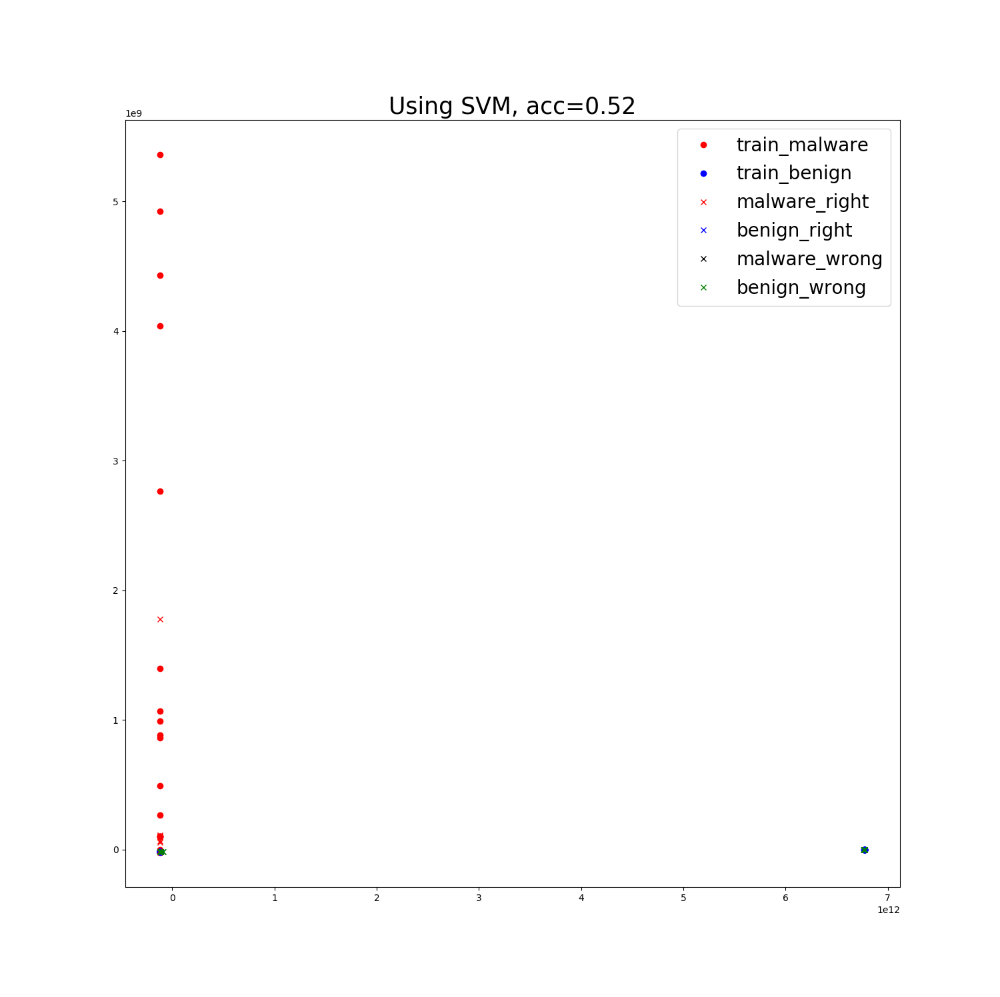
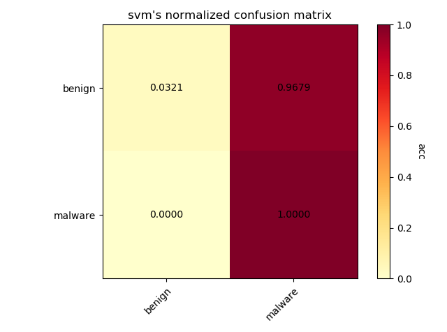
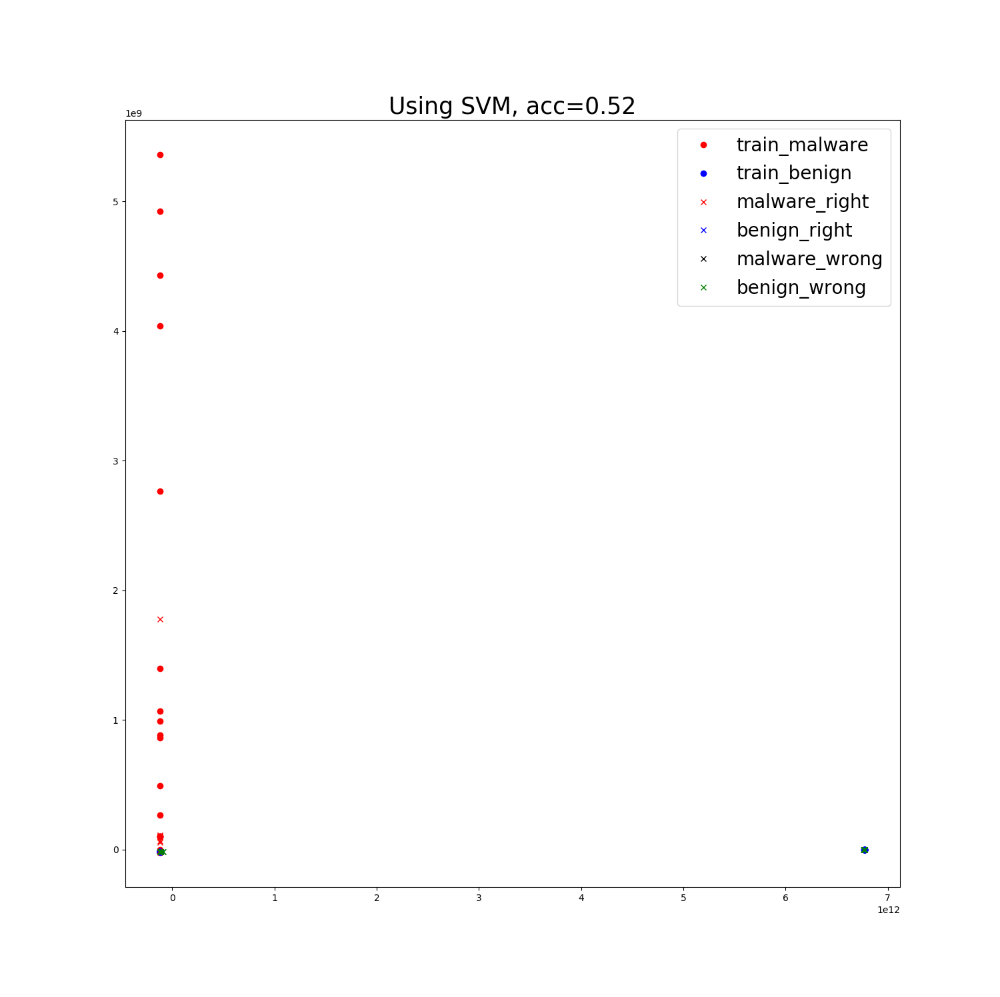
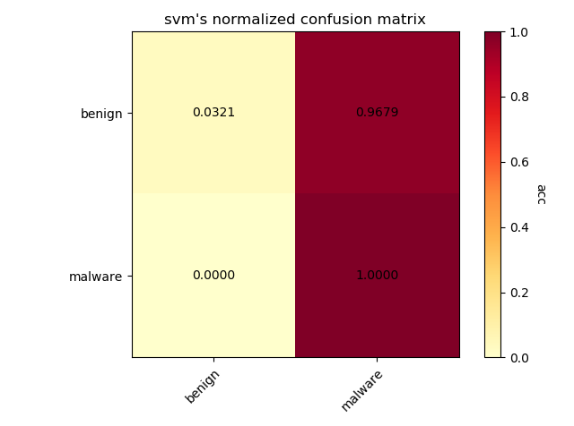
Trojan：

 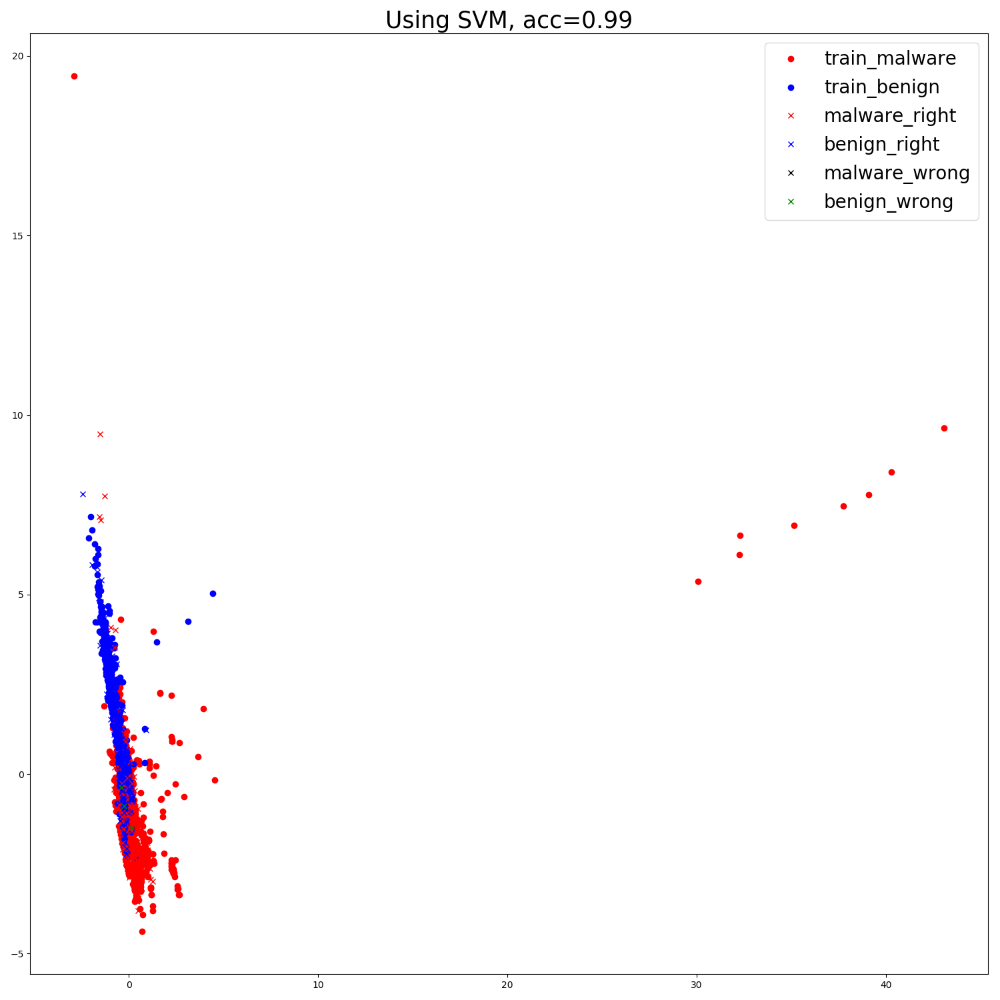
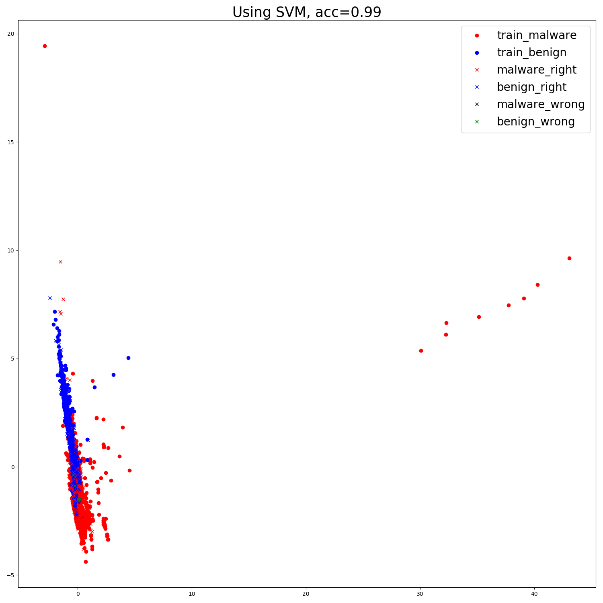

Virus:


由实验结果可见：
kNN的正确率依然十分高，平均约97%，这说明恶意代码大类之间在代码特征上存在 相似性，使得能够没有见过某种大类。但是，考虑另外一种可能性，由于只使用了Windows 的良性样本作为正例，可能会因为良性样本的种类过于单一，使得模型只是学会了“分辨是否是 Windows样本”。因此，后续实验中应该考虑使用更多种类的良性样本
SVM的正确率依旧保持在接近5成左右，说明SVM确实对高维数据和数据间尺度差距过大难以 进行拟合。因此在后续实验中将不会再展示SVM的效果，只展示kNN的效果
综合1.1.4中提出的可能性，因此考虑将训练时的良性数据集和测试时的良性数据集进行分离。 实验中又从C:/Program Files目录（该目录下大部分都是Windows工具程序或者驱动）下提 取了一定数量的良性样本，将Windows良性样本作为训练时的正例，将新的良性数据作为测试时 的正例，重新进行1.1.3的实验。结果如下（模型只使用了kNN）：
Backdoor： 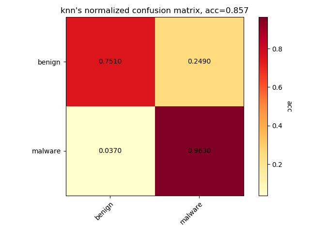
Email：

Net-Worm：

Trojan：

Virus:

测试结果的混淆矩阵显示，恶意样本的识别几乎没有收到任何影响，正确率保持在96%~97% 左右；但是良性样本的识别正确率发生大幅度下降：从96%下降到75%左右，下滑了接近20%。 这说明不同背景的良性数据集确实存在差异，而且模型不能够很好地在这种差异上泛化。由于 良性样本的性能下降，使得模型整体的正确率下降了10%左右。
如果要进行恶意代码的识别的话，为了适用在多种环境中，势必需要对各种良性样本都要有很好 的泛化。因此模型学习应该朝“样本是否是恶意样本”的方向进行：如果样本的特征接近恶意样本， 结果判定为恶意样本；如果样本在一定的间隔下不接近于恶意样本，则判定为良性样本。即模型 应该只识别恶意样本，不识别良性样本，这样的话应该就能对多种不同环境下的良性样本有更好的 泛化。
但是这个目标很难达到，能想到的唯一的办法就是增加良性样本的多样性，将多种环境下的良性样本输入 模型进行训练。但是问题的核心便落在了数据收集上。从这一点上来看，识别恶意代码的工作远比想象中 复杂得多。
由于1.1.6中提到的良性数据集的多样性，因此后续对应的实验中都采取利用Windows数据集训练， ProgramFiles中的文件进行测试的设定。同时，为了测定传统机器学习在小样本情境下的效果， 因此按大类分类，测定大类的小样本性能。实验一共进行了aworm，backdoor，net-worm，trojan 和virus 5个大类的测定。测试时测定了1-shot和5-shot两种小样本设定。结果如下（k=1）：
aworm：
1-shot:

5-shot:

backdoor：
1-shot:

5-shot:

net-worm：
1-shot:

5-shot:

trojan：
1-shot:

5-shot:

virus：
1-shot:
5-shot:

可以发现：
由于样本的采样情况各不相同，导致具有代表性的点和异常点的采样分布不均，因此 5-shot的性能不一定大于1-shot的性能
恶意样本的分类正确率明显高于良性样本的分类正确率。这说明恶意样本的分布在该 特征下较为集中，但是良性样本的多样性导致用Windows数据集训练的分类器在小样本 的设定下更加难以泛化到其他良性数据上
正确率普遍偏低，二分类的基础正确率有50%，但是大部分的最终正确率都在70%~80% 之间
在大类缺省的基础上，进一步进行了小类缺省的小样本实验，即：训练数据中不包含小类的数据， 如aworm.Win32.AutoRun。其余与上一个实验设定基本相同，结果如下：
aworm.AutoRun：
1-shot:

5-shot: 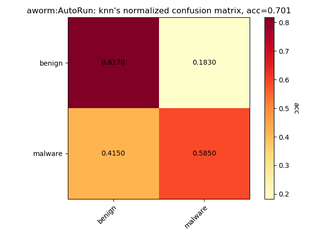
backdoor.Agent：
1-shot:
5-shot: 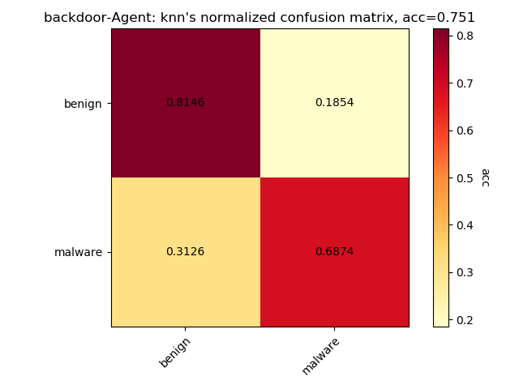
backdoor.IRCBot：
1-shot: 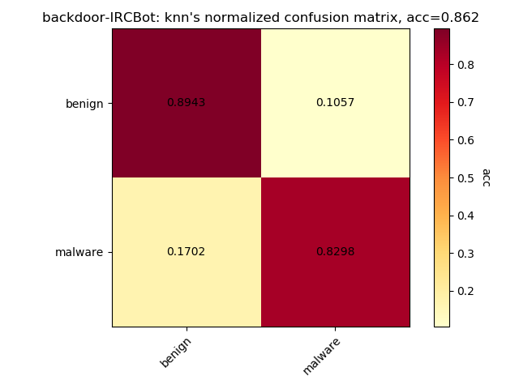
5-shot: 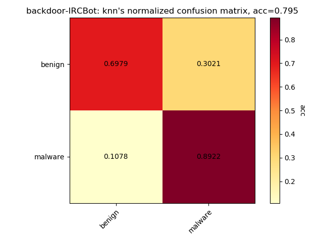
backdoor.PcClient：
1-shot:

5-shot: 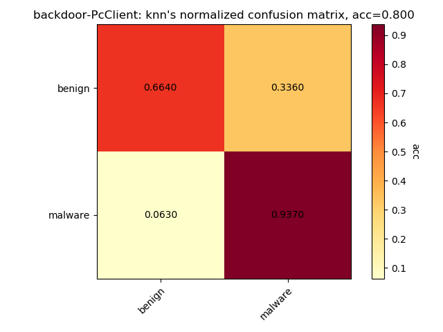
net-worm.Renos：
1-shot: 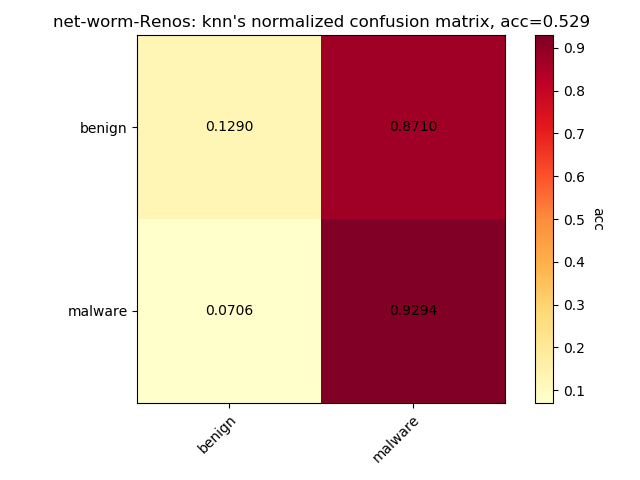
5-shot:
trojan.Banker：
1-shot: 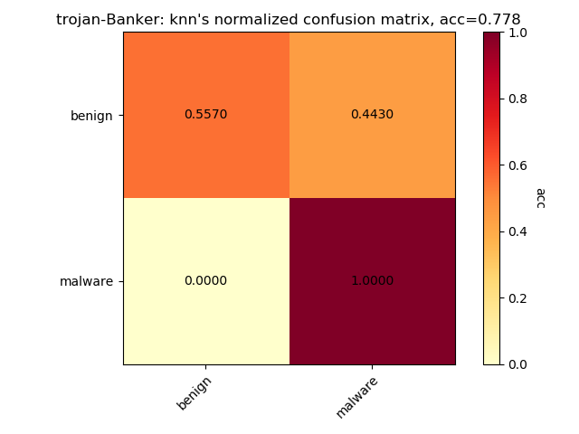
5-shot:

trojan.LdPinch：
1-shot:

5-shot:

trojan.OnLineGames：
1-shot:

5-shot:

trojan.Pakes：
1-shot:

5-shot:
trojan.VB：
1-shot:

5-shot:

trojan.Zlob：
1-shot:

5-shot:

由于采样等问题，上述数据表现的正确率等都有较大程度的波动。但是大部分的正确率都位于 70~80%之间。这说明实质上，由于特征提取的性质，导致虽然良性样本与恶意样本分隔了较大 的间隔，但是恶意样本之间实质上并没有很好的分开，即：基于代码特征的机器学习方法不能 很好将恶意代码分类(classification)，但是能够很好进行恶意代码的识别(detection)
深度学习方法主要是将数据向量化后输入到深度神经网络中得到预测的输出值。本实验中将PE文件 转换为灰度图像的方法参考自 Natara et.al(2011) 。但是该论文中的将PE文件转换为灰度图像的方法是：对于不同长度PE文件应用不同的固定宽度， 图像的长度是可变的。文件大小与宽度的关系如下：
| 大小范围 | 宽度 |
|---|---|
| <10KB | 32 |
| 10-30KB | 64 |
| 30-60KB | 128 |
| 60-100KB | 256 |
| 100-200KB | 384 |
| 200-500KB | 512 |
| 500-100KB | 768 |
| >1000KB | 1024 |
该论文中使用了GIST特征对图像进行小波分解以提取图像的纹理特征，然后将提取的特征输入到欧式 距离的kNN进行分类。参考这种方法，后续有很多实验围绕恶意代码图像进行：
Gibert(2016) 使用简单的卷积神经网络进行分类和识别。不仅使用了图像，还使用了微软数据集中提供的反汇编代码 提取Opcode操作码进行分类。
Kim(2018) 同样使用的是Conv+FC的经典组合。
Kalash et.al(2018) 基于VGG-16搭建深度卷积网络+softmax分类器进行分类，同时还改用SVM对GIST特征进行分类 来搭建基线。
Choi et.al(2017) 使用相似的方式转换图像后，输入到Conv+FC中进行分类。与之前不同的是，论文作者采用固定的256x256 的图像尺寸，该尺寸下的代码大小为固定的64KB。对于大于64KB的文件，之后的部分直接丢弃；对于小于 64KB的图像，将会填充0。文章中作者为了减小显存消耗，还将图片通过下采样将尺寸调整为32x32。
根据论文[Transfer Learning for Image-Based Malware Classification", Bhodia et.al(2019)](Transfer learning for image-based malware classification.pdf) 中的描述，他们使用了ResNet34作为恶意代码检测的模型架构。该论文中使用的恶意代码数据集是Malimg 和Malicia两个，而训练使用的良性数据集提取了3304个Windows文件。该论文中的网络是经过ImageNet 数据集预训练的，同时使用了多种技术，如余弦退火cosine annealing，带重启的梯度下降gradient descent with restart，学习率搜索等。同时使用fast.ai进行实现。该论文中进行了一个十分类似0-shot的实验： 论文中称之为zero day setting，即使用Malimg数据集进行训练，而使用Malicia数据集进行测试。 除此之外，文章对恶意代码识别和恶意代码分类均有涉猎，值得参考。
由于ResNet中要具有分类效果的话需要加入FC层，因此图像只能是固定大小尺寸作为输入。规定图像尺寸为256x256， 为了让不同长度的文件都生成相同尺寸的图像，其具体步骤如下：
仿照论文中的方式，每8bit将二进制文件处理为0-255的一个灰度值，生成长度为L的灰度序列
将序列转换为正方形形状的图像。
先求正方形图像的边长： $\hat{L} = \lfloor\sqrt{L}\rfloor$
再取原图像的前$L^2$个灰度值，整理为$\hat{L}\times\hat{L}$的正方形图像
$\hat{L} > 256$时，通过scale将图像调整为256x256的图像；$\hat{L} < 256$ 时，通过插值放大 调整为256x256
生成图像时，利用了PIL库中的Image.ANTIALIAS方法进行缩放处理：
crop_w = int(image.shape[0] ** 0.5)
image = image[:crop_w ** 2]
image = image.reshape((crop_w, crop_w))
image = np.uint8(image)
if padding and crop_w < WIDTH:
image = np.pad(image, (WIDTH - crop_w), 'constant', constant_values=(0))
im = Image.fromarray(image)
if fuzzy is not None:
im = im.resize((fuzzy, fuzzy), Image.ANTIALIAS)
im = im.resize((WIDTH, WIDTH), Image.ANTIALIAS)
这种方法能够得到同一尺寸的图像，通过观察可以看到同一个类中的一些图像确实具有相似的纹理和可视特征， 例如:
但是相应的，由于scale会使得图像细节变得模糊，甚至失真，因此即使是某些同类图像也难以直接识别 其是否具有相似的特征。
由于恶意代码图像的缩放和插值处理，同时加上其本身的纹理和特征不具有直观性，因此人类无法直接 通过恶意代码图像直接进行分类。因此，该识别任务难以进行直观的可视化观测，同时该任务在性 能上的表现一定会超越人类。
遵循之前传统机器学习中的设定：训练集中良性数据集使用Windows数据集，而测试中的良性数据集使用 ProgramFiles的数据集。训练时，按照之前的设定，每一个恶意代码的文件夹都抽取100个样本，共13 个文件夹生成1300个恶意代码的训练样本，同时从Windows中抽取等同数量的良性样本，混合后输入 到ResNet进行训练，训练曲线如下：


显然，由于训练集的分离，使得模型对于良性数据过拟合，而对于恶意代码样本的具有很好的拟合，这 与传统机器学习中的情况相同。同时，模型整体的正确率也显著低于传统机器学习方法。这说明，从 图像上直接提取特征，ResNet的性能很难超越传统机器学习方法。
相同的设定，不同的是训练数据中不包含某些大类的数据，然后测试中的恶意代码是来自这些缺少的大类 以此来模拟0-shot的情景：ResNet是否能在没有见过某些数据的情况下对其进行准确分类，是否能提取 到具有良好泛化性的特征。同时，这种测试情景模拟了Bhodia et.al(2019) 中zero-day的实验设定。
测试结果如下：
backdoor缺省： 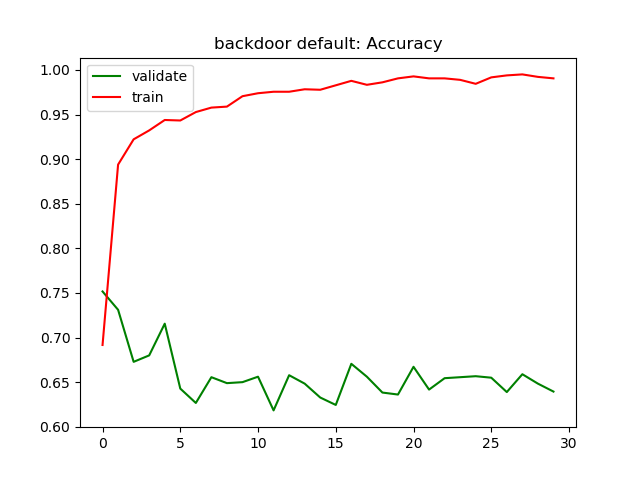
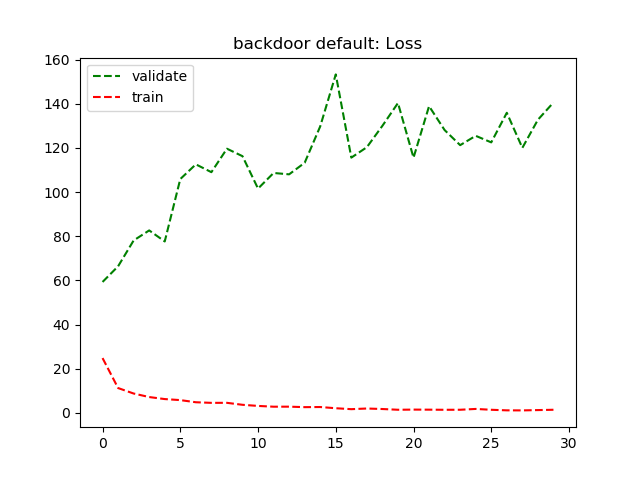
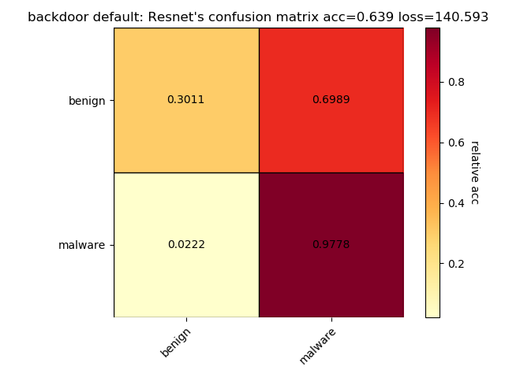
trojan缺省： 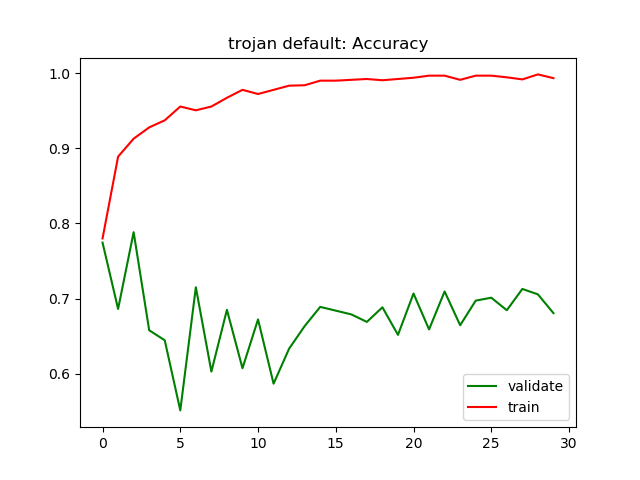
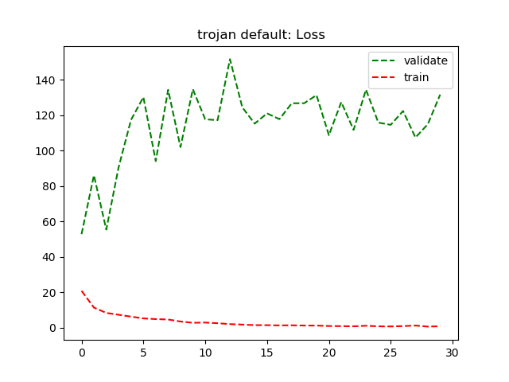

virus缺省： 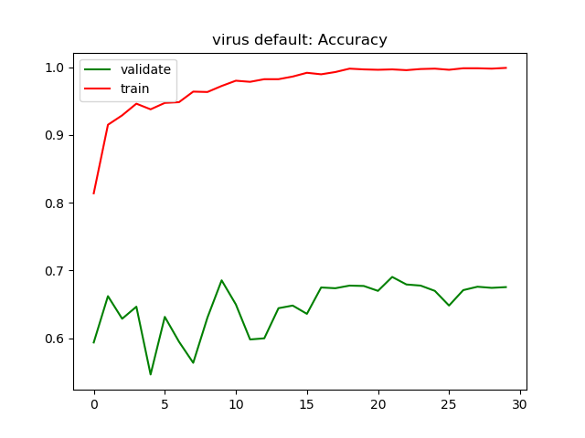
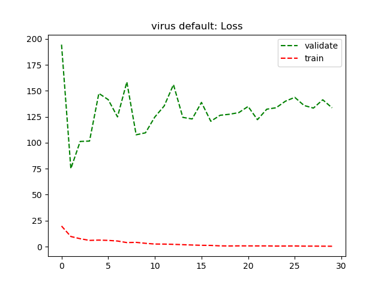

与非大类缺省的情况相似，模型在恶意代码上几乎没有出现过拟合现象，分类正确率高达97%左右； 性能瓶颈主要是位于良性数据集上。同时，可以从学习曲线中发现在训练过程中过拟合几乎从训练开始 就出现了，而且随着训练过程进行越来越严重。
由于ResNet此类的深度卷积网络在数据集少时会遭受严重的过拟合，在没有特殊训练方式的支持下 不能直接使用小样本数据进行从头学习。在小样本学习领域的一个普遍的方法是：在其他数据集上进行 预训练，然后利用小样本数据对预训练好的模型进行权重微调fine-tuning。这样使得模型对没见过的 novel class
为了进行该实验，首先在某个大类X缺省的数据集上训练模型，然后利用小样本的X（5-shot）对训练得到 的模型进行微调。选取X=backdoor，trojan和virus三个大类。微调时，为了避免对恶意代码产生 过大的偏置，因此微调的数据集中添加了同等数量的Windows良性样本。
实验结果如下：
backdoor缺省：


trojan缺省：

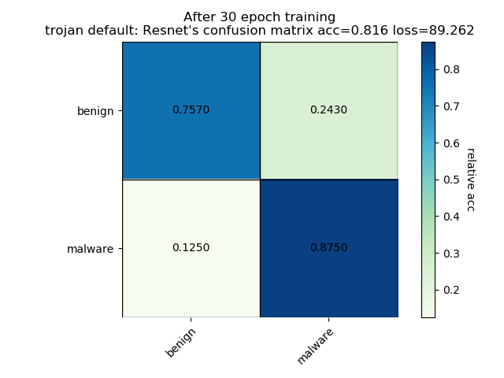
virus缺省： 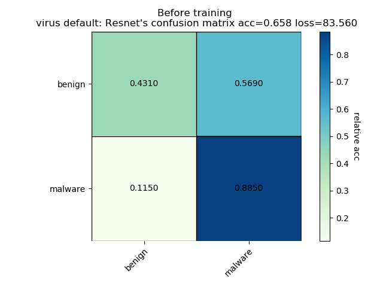

可以看到微调并没有对整体正确率有显著的提升：
5-shot用于微调的数据并不能保证具有该类的代表性，因此可能对缺省的类进行分类时其提升效果 并不能被保证
微调时由于缺少原训练集中的数据，因此会导致对原数据集产生遗忘
由于没有加入测试集中的分离的良性数据，因此良性数据的分类效果几乎没有提升
因此，如果原训练模型没有很好的结构，或者原模型的训练方式没有很好的定制，或者微调的方式没有 很好的制定，则小样本的微调并不能解决数据适应的问题。
在实际应用情景中，我们希望在各种情况下，即遇到不同来源的良性数据集时，模型都能将其与 恶意代码分类开。换句话说，我们希望模型对数据进行“识别其是否是恶意代码，如果不是那就是 良性代码”的任务，即只对恶意代码敏感，而对非恶意代码不敏感。如果模型能够学习到这样的 识别能力，那么只要该代码不含有恶意代码的特征，无论其来自什么数据集或者应用场景中，模型 都能对其进行正确分类。
但是由于模型的训练是基于数据的，除非特殊设计，模型很难对这种能力进行学习。为了达到 这种目的，必须要使良性数据集具有足够大的多样性，同时其不具有恶意代码的特征。首先能够 想到的方式就是人为生产一定数量的噪声图像输入到模型中作为良性数据集的增补。
生成噪声的方式主要有均匀噪声，高斯噪声和恒值噪声等。本实验中主要使用高斯噪声，即每个点 的灰度值独立地服从高斯分布，实验中点的采样服从:
$f(x,y) \sim N(128,40)$
正态分布的分布特征：3个标准差内的密度值高达99.9%，以来保证大部分的值位于[0,255]之间，同时大部分的值位于均值附近。
训练时，在训练集中混入良性数据集中Windows文件数量一半数量的噪声图像以帮助训练。同时 训练的基础设定为大类缺省。因此，将在大类缺省的情况下测试噪声加入后的泛化效果。
实验结果显示，噪声并不能加强模型的泛化能力，反而使得模型难以收敛。因此实验只进行了一 部分：

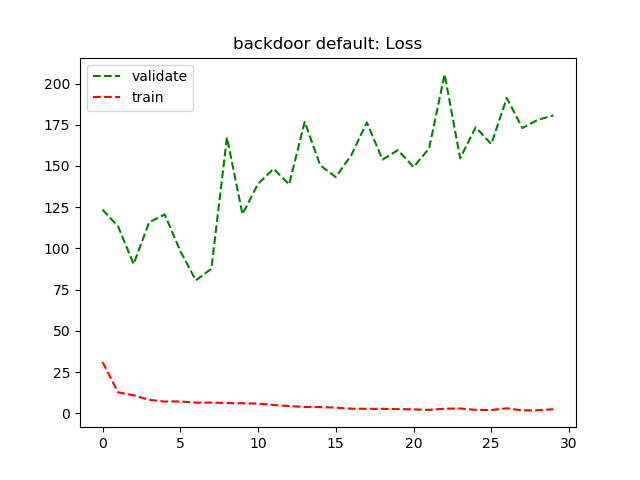

恶意代码分类是指给定某几个类（大类或者小类）的样本，要求训练器能够将同属于这些类的样本进行分类。恶意代码 的大类一般定义为其根类别，如Virus，Trojan，Aworm，DOS等；而小类的定义一般是根据给定的文件的命名方式 而定，一般文件名取按"."划分以后的前三个字段。
例如： Backdoor.Win32.Hupigon.zah 位于backdoor文件夹中，因此其大类为backdoor；其由"."划分的字段的前三 个元素为Backdoor.Win32.Hupigon，因此其小类就对应这个名字。提取其小类名称的代码段如下：
def extract_class_name(name):
return '.'.join(name.split('.')[:3])